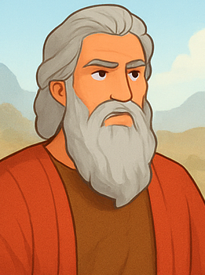

موسى
🪪
الاسم والمعنى
- العربي: موسى
- الإنجليزي: Moses
- العبري: מֹשֶׁה (موشيه)
- المعنى: المنتشل من الماء / المنقَذ من الماء
⌛
الزمن والخلفية التاريخية
- عاش في القرن الـ 13–15 ق.م تقريبًا (في فترة وجود بني إسرائيل بمصر).
- نشأ في قصر فرعون بعد إنقاذه من مياه النيل.
- قاد شعب إسرائيل للخروج من العبودية في مصر نحو أرض كنعان.
ℹ️
نبذة
- موسى هو النبي الأعظم والمشرّع في العهد القديم.
- اختاره الله ليكون الوسيط بينه وبين الشعب، وليعطي الشريعة على جبل سيناء.
- يعتبر رمزًا للخلاص والحرية من العبودية.
📜
القصة
- وُلد في وقت كان فرعون يأمر بقتل المواليد العبرانيين.
- وضعته أمه في سفط على النيل، فوجدته ابنة فرعون وربّته.
- بعدما كبر، قتل مصريًا كان يظلم عبرانيًا وهرب إلى مديان.
- هناك ظهر له الله في العليقة المشتعلة، ودعاه ليحرر شعبه.
- واجه فرعون بالضربات العشر حتى سمح بخروج بني إسرائيل.
- عبر البحر الأحمر بمعجزة، ثم سار بالشعب في البرية 40 سنة.
- على جبل سيناء تسلّم الوصايا العشر.
- لم يدخل أرض الموعد بسبب عصيانه عند ماء مريبة، لكنه مات على جبل نبو.
💡
الصفات الشخصية
- المميزات
- الإيمان العميق بالله.
- القيادة والشجاعة في مواجهة فرعون.
- التواضع (أعظم مثال: “وكان موسى حليمًا جدًا أكثر من جميع الناس”).
- المثابرة والصبر على الشعب بالرغم من تذمرهم.
-
- الضعفات
- اندفاعه في شبابه (قتل المصري).
- الغضب أحيانًا (كسر لوحي الشريعة / ضرب الصخرة).
- عدم تمجيد الله أمام الشعب مما أدي إلي عدم دخوله أرض الموعد
🤲
العلاقة مع الله
- كان يتحدث مع الله “وجهًا لوجه”.
- أقام الله معه عهدًا على جبل سيناء.
- نال شرف رؤية مجد الله.
✨
المعجزات أو الأحداث الخارقة
- العليقة المشتعلة التي لا تحترق.
- الضربات العشر في مصر.
- شق البحر الأحمر.
- نزول المن والسلوى من السماء.
- تفجير الماء من الصخرة.
- نزول الشريعة على جبل سيناء.
📝
الأعداء أو التحديات
- فرعون ملك مصر.
- صعوبة قيادة شعب كثير التذمر.
- الشعوب المعادية في البرية (عماليق وغيرهم).
- خطايا الشعب وعبادة العجل الذهبي.
🌟
الدروس المستفادة
- الله قادر أن يخلّص شعبه مهما كان العدو قويًا.
- القائد الحقيقي يحتاج التواضع والصبر.
- الطاعة الكاملة لله أهم من القوة البشرية.
- أحيانًا الخطأ الصغير له عواقب كبيرة (حرمان موسى من أرض الموعد).
🟰
الرموز والدلالات
- موسى رمز للمخلّص الذي يحرر شعبه.
- الخروج من مصر يرمز للخلاص من عبودية الخطية.
- المن والسلوى يرمزان للغذاء الروحي الذي يعطيه الله.
- موسى يرمز للمسيح كنبي ووسيط بين الله والشعب.
📖
الاقتباسات والآيات
- “فقال: إني أكون معك” (خروج 3: 12).
- “فقال: أهيه الذي أهيه” (خروج 3: 14).
- “وكان موسى حليمًا جدًا أكثر من جميع الناس الذين على وجه الأرض” (عدد 12: 3).
- الوصايا العشر (خروج 20).
🔗
المصادر
- الكتاب المقدس: سفر الخروج، اللاويين، العدد، التثنية.
- التقليد اليهودي والمسيحي.
- مراجع لاهوتية وتفسيرية متنوعة.